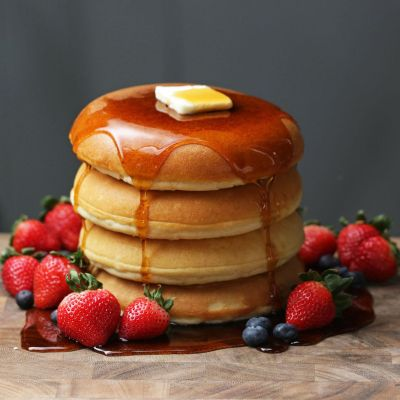

Fluffy Pancakes
← Back to Odin Recipes

Description
These pancakes are light, fluffy, and easy to make.
Ideal for a relaxed weekend breakfast.
Ingredients
- 150g plain flour
- 2 tbsp sugar
- 2 tsp baking powder
- Pinch of salt
- 200ml milk
- 1 large egg
- 2 tbsp melted butter or oil
Steps
- In a bowl, whisk together the flour, sugar, baking powder, and salt.
- In another bowl, whisk the milk, egg, and melted butter.
- Pour the wet ingredients into the dry and stir gently until just combined.
- Heat a lightly oiled pan over medium heat.
- Pour small circles of batter into the pan.
- Cook until bubbles appear on the surface, then flip and cook until golden.
- Serve warm with syrup, fruit, or your favourite toppings.